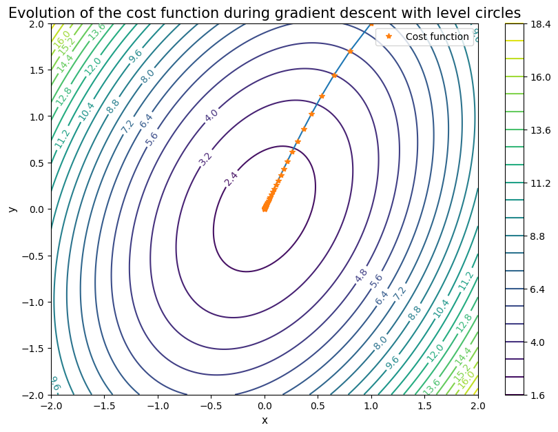
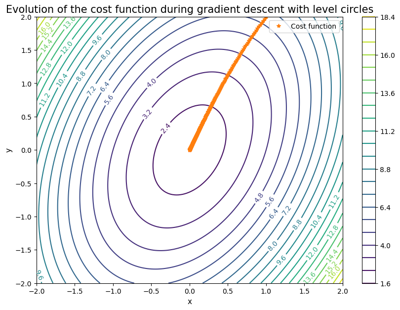
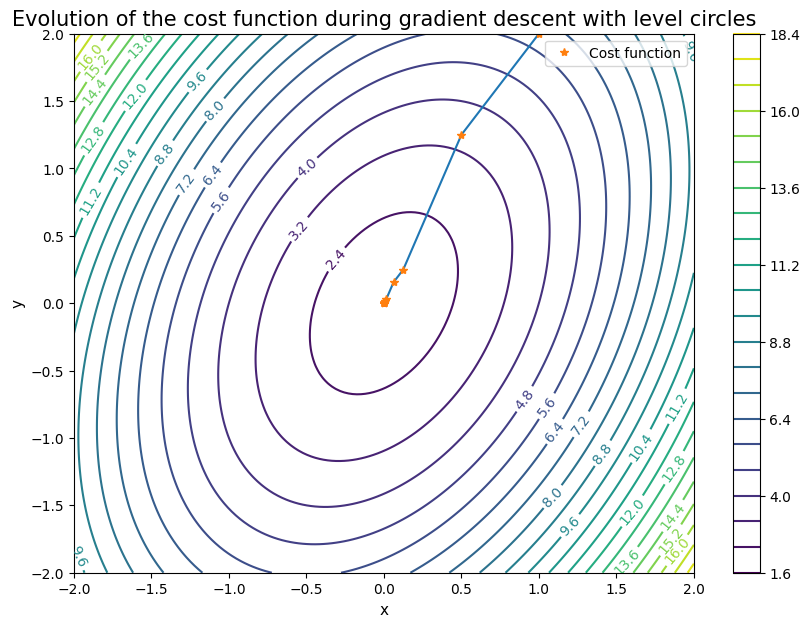

Gradient descent
Gradient descent
To find the infimum of an arbitrary cost function, we use here the gradient descent. Let us consider the function $f(x,y)=2x^2+y^2-xy+2$ that we aim at minimizing on $ \mathbb{R}^2$. We start by manually compute its gradient and we will display its evolution during gradient descent.
import sys
!{sys.executable} -m pip install numpy
!{sys.executable} -m pip install matplotlib
Requirement already satisfied: numpy in /usr/local/Cellar/jupyterlab/4.2.1/libexec/lib/python3.12/site-packages (2.0.0)
[1m[[0m[34;49mnotice[0m[1;39;49m][0m[39;49m A new release of pip is available: [0m[31;49m24.0[0m[39;49m -> [0m[32;49m24.2[0m
[1m[[0m[34;49mnotice[0m[1;39;49m][0m[39;49m To update, run: [0m[32;49m/usr/local/Cellar/jupyterlab/4.2.1/libexec/bin/python -m pip install --upgrade pip[0m
Requirement already satisfied: matplotlib in /usr/local/Cellar/jupyterlab/4.2.1/libexec/lib/python3.12/site-packages (3.9.1)
Requirement already satisfied: contourpy>=1.0.1 in /usr/local/Cellar/jupyterlab/4.2.1/libexec/lib/python3.12/site-packages (from matplotlib) (1.2.1)
Requirement already satisfied: cycler>=0.10 in /usr/local/Cellar/jupyterlab/4.2.1/libexec/lib/python3.12/site-packages (from matplotlib) (0.12.1)
Requirement already satisfied: fonttools>=4.22.0 in /usr/local/Cellar/jupyterlab/4.2.1/libexec/lib/python3.12/site-packages (from matplotlib) (4.53.1)
Requirement already satisfied: kiwisolver>=1.3.1 in /usr/local/Cellar/jupyterlab/4.2.1/libexec/lib/python3.12/site-packages (from matplotlib) (1.4.5)
Requirement already satisfied: numpy>=1.23 in /usr/local/Cellar/jupyterlab/4.2.1/libexec/lib/python3.12/site-packages (from matplotlib) (2.0.0)
Requirement already satisfied: packaging>=20.0 in /usr/local/Cellar/jupyterlab/4.2.1/libexec/lib/python3.12/site-packages (from matplotlib) (24.0)
Requirement already satisfied: pillow>=8 in /usr/local/Cellar/jupyterlab/4.2.1/libexec/lib/python3.12/site-packages (from matplotlib) (10.4.0)
Requirement already satisfied: pyparsing>=2.3.1 in /usr/local/Cellar/jupyterlab/4.2.1/libexec/lib/python3.12/site-packages (from matplotlib) (3.1.2)
Requirement already satisfied: python-dateutil>=2.7 in /usr/local/Cellar/jupyterlab/4.2.1/libexec/lib/python3.12/site-packages (from matplotlib) (2.9.0.post0)
Requirement already satisfied: six>=1.5 in /usr/local/Cellar/jupyterlab/4.2.1/libexec/lib/python3.12/site-packages (from python-dateutil>=2.7->matplotlib) (1.16.0)
[1m[[0m[34;49mnotice[0m[1;39;49m][0m[39;49m A new release of pip is available: [0m[31;49m24.0[0m[39;49m -> [0m[32;49m24.2[0m
[1m[[0m[34;49mnotice[0m[1;39;49m][0m[39;49m To update, run: [0m[32;49m/usr/local/Cellar/jupyterlab/4.2.1/libexec/bin/python -m pip install --upgrade pip[0m
import numpy as np
import matplotlib.pyplot as plt
def f(x,y):
return ...
def df(x,y):
return ...
We need to define a norm to now how far from the global solution we are.
def norm(a):
return np.sqrt(a[0]**2+a[1]**2)
## start GD algorithm
eps=1e-6
alpha=0.1 #test with alpha=1
x0,y0=1,2
evolution = [[x0, y0]]
grad_f = df(x0, y0)
while ...>=eps:
d = ...
x0, y0 = ...
evolution = ...
grad_f = ...
evolution_X = evolution[:, 0]
evolution_Y = evolution[:, 1]
x1 = np.linspace(-2, 2, 150)
y1 = np.linspace(-2, 2, 150)
Xx, Yy = np.meshgrid(x1, y1)
Z = fxy(Xx, Yy)
fig = plt.figure(figsize = (10,7))
contours = plt.contour(Xx, Yy, Z, 20)
plt.clabel(contours, inline = True, fontsize = 10)
plt.title("Evolution of the cost function during gradient descent with level circles", fontsize=15)
plt.plot(evolution_X, evolution_Y)
plt.plot(evolution_X, evolution_Y, '*', label = "Cost function")
plt.xlabel('x', fontsize=11)
plt.ylabel('y', fontsize=11)
plt.colorbar()
plt.legend(loc = "upper right")
plt.show()

With $\alpha=1$, the solution blows up, a correct choice for $\alpha$ is very important. That is why, we will proceed with Armijo rule:
c1=.6
beta=1. #test with beta=1
gamma=0.01
def phik(xyk,alphak,dk):
return ...
def dphik(xyk,alphak,dk):
grad_f=...
return ...
def armijo_rule(alpha,xy_old,d): #d_x est la direction de descente d_x . grad_x <= 0
# test f(x_new) \leq f(x_0) + c alpha ps{d_x}{grad_x}
test = 1
iter=0
while test!=0 and iter<500:
if phik(xy_old,alpha,d)<=...:
test = 0
else:
alpha*=gamma
iter+=1
return alpha
#initialization for Armijo
alpha=beta
## start GD algorithm
eps=1e-6
x0,y0=1,2
evolution = [[x0, y0]]
grad_f = dfxy(x0, y0)
cpt_grad=0
while norm(grad_f)>=eps and cpt_grad<500:
d = -grad_f
#armijo
alpha=beta
xy_old=np.array([x0,y0])
cpt=0
alpha=armijo_rule(alpha,xy_old,d)
#while phik(xy_old,alpha,d)>phik(xy_old,0,d)+c1*dphik(xy_old,0,d)*alpha and cpt<500:
# alpha*=gamma
# cpt+=1
x0, y0 = x0 + alpha*d[0], y0 + alpha*d[1]
evolution = np.vstack((evolution, [x0, y0]))
grad_f = dfxy(x0, y0)
cpt_grad+=1
evolution_X = evolution[:, 0]
evolution_Y = evolution[:, 1]
x1 = np.linspace(-2, 2, 150)
y1 = np.linspace(-2, 2, 150)
Xx, Yy = np.meshgrid(x1, y1)
Z = fxy(Xx, Yy)
fig = plt.figure(figsize = (10,7))
contours = plt.contour(Xx, Yy, Z, 20)
plt.clabel(contours, inline = True, fontsize = 10)
plt.title("Evolution of the cost function during gradient descent with level circles", fontsize=15)
plt.plot(evolution_X, evolution_Y)
plt.plot(evolution_X, evolution_Y, '*', label = "Cost function")
plt.xlabel('x', fontsize=11)
plt.ylabel('y', fontsize=11)
plt.colorbar()
plt.legend(loc = "upper right")
plt.show()

# Wolfe rule:
c1=.6
c2=.8
beta=1 #test with beta=1
eta=2.
gamma=0.01
def phik(xyk,alphak,dk):
return ...
def dphik(xyk,alphak,dk):
grad_f=...
return np.dot(grad_f,dk)
def wolfe_rule(alpha,xy_old,d): #d_x est la direction de descente d_x . grad_x <= 0
# test f(x_new) \leq f(x_0) + c alpha ps{d_x}{grad_x}
test = 1
iteration = 0
min_ = 0
max_ = 1000
while (phik(xy_old,alpha,d)<=...&(iteration<=500): #armijo ok
alpha=eta*alpha
iteration = 0
while (test!=0)&(iteration<=500):
xnew0,xnew1=xy_old[0]+alpha*d[0],...
if (phik(xy_old,alpha,d)<= (phik(xy_old,0,d)+c1*dphik(xy_old,0,d)*alpha)) & (np.dot(df(xnew0,xnew1),d) >= c2*np.dot(df(xy_old[0],xy_old[1]),d) ):
test = 0
elif phik(xy_old,alpha,d)> ...: #no armijo
max_ = ...
alpha = ...
iteration = iteration +1
else: # armijo ok
minorant = ...
alpha = ...
iteration = iteration +1
return alpha
#initialization for Armijo
alpha=beta
## start GD algorithm
eps=1e-6
x0,y0=1,2
evolution = [[x0, y0]]
grad_f = dfxy(x0, y0)
cpt_grad=0
while norm(grad_f)>=eps and cpt_grad<500:
d = -grad_f
#armijo
alpha=beta
xy_old=np.array([x0,y0])
cpt=0
alpha=wolfe_rule(alpha,xy_old,d)
x0, y0 = x0 + alpha*d[0], y0 + alpha*d[1]
evolution = np.vstack((evolution, [x0, y0]))
grad_f = dfxy(x0, y0)
cpt_grad+=1
evolution_X = evolution[:, 0]
evolution_Y = evolution[:, 1]
x1 = np.linspace(-2, 2, 150)
y1 = np.linspace(-2, 2, 150)
Xx, Yy = np.meshgrid(x1, y1)
Z = fxy(Xx, Yy)
fig = plt.figure(figsize = (10,7))
contours = plt.contour(Xx, Yy, Z, 20)
plt.clabel(contours, inline = True, fontsize = 10)
plt.title("Evolution of the cost function during gradient descent with level circles", fontsize=15)
plt.plot(evolution_X, evolution_Y)
plt.plot(evolution_X, evolution_Y, '*', label = "Cost function")
plt.xlabel('x', fontsize=11)
plt.ylabel('y', fontsize=11)
plt.colorbar()
plt.legend(loc = "upper right")
plt.show()

Elise Grosjean
Assistant Professor
My research interests include numerics, P.D.E analysis, Reduced basis methods, inverse problems.